Bilateral Filtering
This tour explores edge preserving filtering and in particular the bilateral filter, with applications to denoising and detail enhancement.
Contents
Installing toolboxes and setting up the path.
You need to download the following files: signal toolbox and general toolbox.
You need to unzip these toolboxes in your working directory, so that you have toolbox_signal and toolbox_general in your directory.
For Scilab user: you must replace the Matlab comment '%' by its Scilab counterpart '//'.
Recommandation: You should create a text file named for instance numericaltour.sce (in Scilab) or numericaltour.m (in Matlab) to write all the Scilab/Matlab command you want to execute. Then, simply run exec('numericaltour.sce'); (in Scilab) or numericaltour; (in Matlab) to run the commands.
Execute this line only if you are using Matlab.
getd = @(p)path(p,path); % scilab users must *not* execute this
Then you can add the toolboxes to the path.
getd('toolbox_signal/'); getd('toolbox_general/');
Gaussian Linear Filtering
The most basic filtering operation is the Gaussian filtering, that tends to blur edges.
Image size.
n = 256*2;
Load an image.
name = 'hibiscus';
f0 = load_image(name, n);
f0 = rescale(crop( sum(f0,3) ,n));
A Gaussian filter of variance \(\si\) reads \[ \Gg_\si(f)(x) = \frac{1}{Z} \sum_y G_\si(x-y) f(y) \qwhereq Z = \sum_y G_\si(y), \] and where the Gaussian kernel is defined as: \[ G_\si(x) = e^{-\frac{\norm{x}^2}{2\si^2}}. \]
A convolution can be computed either over the spacial domain in \(O(N\si_x^2)\) operations or over the Fourier domain in \(O(N \log(N))\) operations. Depending on the value of \( \si_x \), one should prefer either Fourier or spacial domain. For simplicity, we consider here the Fourier domain (and hence periodic boundary conditions).
Define a Gaussian function, centered at the top left corner (because it corresponds to the 0 point for the FFT).
x = [0:n/2-1, -n/2:-1]; [Y,X] = meshgrid(x,x); GaussianFilt = @(s)exp( (-X.^2-Y.^2)/(2*s^2) );
Display a recentered example of Gaussian.
clf; imageplot(fftshift(GaussianFilt(40)));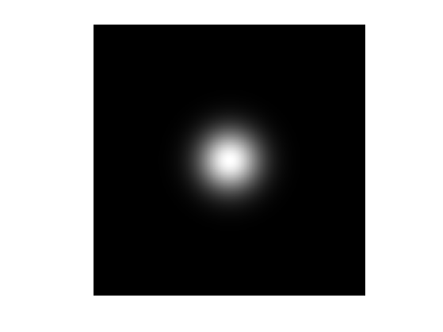
Define a shortcut to perform linear Gaussian filtering over the Fourier domain. This function is able to process in parallel a 3D block F by filtering each F(:,:,i).
Filter = @(F,s)real( ifft2( fft2(F).*repmat( fft2(GaussianFilt(s)), [1 1 size(F,3)] ) ) );
Example of filtering \( \Gg_\si(f_0) \).
clf; imageplot( Filter(f0,5) );

Exercice 1: (check the solution) Display a filtering \(\Gg_\si(f_0)\) with increasing size \(\si\).
exo1;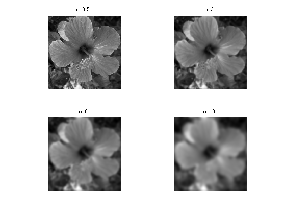
Bilateral Filter
The bilateral filter is a spacially varying filter that better preserves edges than the Gaussian filter.
It was first introduced in:
Carlo Tomasi and Roberto Manduchi, Bilateral Filtering for Gray and Color Images, Proceedings of the ICCV 1998
A very good set of ressources concerning the bilateral filter can be found on Sylvain Paris web page. It includes a fast implementation, research and review papers.
Given a spacial width \(\si_x\) and a value width \(\si_v\), the filter opterates as: \[ \Bb_{\si_x,\si_v}(f)(x) = \frac{1}{Z_x} \sum_y G_{\si_x}( x-y ) G_{\si_v}(f(x)-f(y)) f(y) \] where the normalizing constant is \[ Z_x = \sum_y G_{\si_x}( x-y ) G_{\si_v}(f(x)-f(y)).\]
At a given pixel \(x\), it corresponds to an averaring with the data-dependant kernel \( G_{\si_x}( x-y ) G_{\si_v}(f(x)-f(y)) \).
Bilateral Filter by Stacking
Implementing the bilateral filter directly over the spacial domain requires \(O( N \si_x^2 )\) operations where \(N\) is the number of pixels.
A fast approximate implementation is proposed in:
Fast Bilateral Filtering for the Display of High-Dynamic-Range Images, Fredo Durand and Julie Dorsey, SIGGRAPH 2002.
It exploits the fact that for all pixels \(x\) with the same value \(v=f(x)\), the bilateral filter can be written as a ratio of convolution \[ \Bb_{\si_x,\si_v}(f)(x) = F_v(x) = \frac{ [G_{\si_x} \star ( f \cdot W_v )](x) }{ [G_{\si_x} \star W_v](x) } \] where the weight map reads \[ W_v(x) = G_{\si_v}(v-f(x)). \]
Instead of computing all possible weight maps \(W_v\) for all possible pixel values \(v\), one considers a subset \(\{v_i\}_{i=1}^p\) of \(p\) values and computes the weights \( \{ W_{v_i} \}_i \).
Using these convolutions, one thus optains the maps \( \{ F_{v_i} \}_i \), that are combined to obtain an approximation of \( \Bb_{\si_x,\si_v}(f)\).
The computation time of the method is \( O(p N\log(N)) \) over the Fourier domain (the method implemented in this tour) and \( O(p N \si_x^2) \) over the spacial domain.
Value of \(\sigma_x\):
sx = 5;
Value of \(\sigma_v\):
sv = .2;
Number \(p\) of stacks. The complexity of the algorithm is proportional to the number of stacks.
p = 10;
Function to build the weight stack \( \{ W_{v_i} \}_i \) for \(v_i\) uniformly distributed in \([0,1]\).
Gaussian = @(x,sigma)exp( -x.^2 / (2*sigma^2) ); WeightMap = @(f0,sv)Gaussian( repmat(f0, [1 1 p]) - repmat( reshape((0:p-1)/(p-1), [1 1 p]) , [n n 1]), sv );
Compute the weight stack map. Each W(:,:,i) is the map \(W_{v_i}\) associated to the pixel value \( v_i \).
W = WeightMap(f0,sv);
Exercice 2: (check the solution) Display several weights \( W_{v_i} \).
exo2;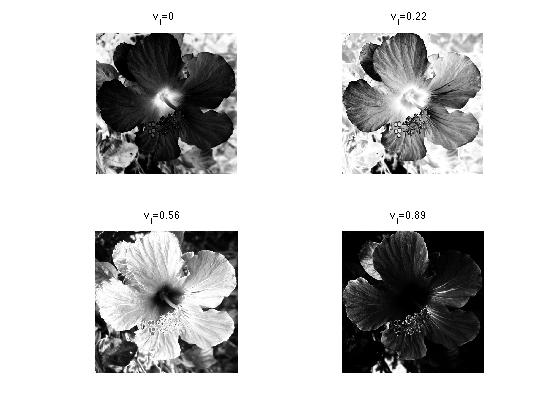
Shortcut to compute the bilateral stack \(\{ F_{v_i} \}_i \).
bileteral_stack_tmp = @(f0,sx,W)Filter(W.*repmat(f0, [1 1 p]), sx) ./ Filter(W, sx); bileteral_stack = @(f0,sx,sv)bileteral_stack_tmp(f0,sx,WeightMap(f0,sv));
Compute the bilateral stack \(\{ F_{v_i} \}_i \).
F = bileteral_stack(f0,sx,sv);
Exercice 3: (check the solution) Display several stacks \(F_{v_i}\).
exo3;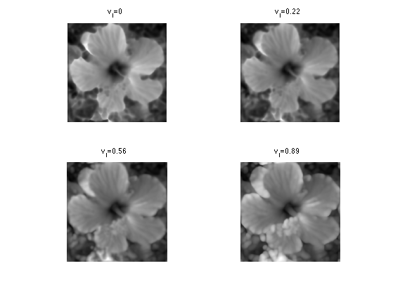
Destacking corresponds to selecting a layer \( I(x) \in \{1,\ldots,p\} \) at each pixel. \[f_I(x) = F_{ v_{I(x)} }(x). \]
Shortcut for de-stacking using a set of indexes.
[y,x] = meshgrid(1:n,1:n); indexing = @(F,I)F(I); destacking = @(F,I)indexing(F,x + (y-1)*n + (I-1)*n^2);
The simplest reconstruction method performs the destacking using the nearest neighbor value: \[ I(x) = \uargmin{ 1 \leq i \leq p } \abs{f(x)-v_i}. \]
Shortcut for performing de-stacking by nearest neighbor interpolation.
bilateral_nn = @(f0,sx,sv)destacking( bileteral_stack(f0,sx,sv), round( f0*(p-1) ) + 1 );
Display.
fNN = bilateral_nn(f0,sx,sv); clf; imageplot( fNN );
A better reconstruction is obtained by using a first order linear interpolation to perform the destacking. \[ \Bb_{\si_x,\si_v}(f)(x) \approx (1-\la(x))f_{I(x)}(x) + \la(x) f_{I(x)+1}(x)\] where \(I(x)\) and \(\la(x)\) are defined as \[ f(x) = (1-\la(x)) v_{I(x)} + \la(x) v_{I(x)+1} \qwhereq \la(x) \in [0,1). \]
Shortcut for the linear interpolation reconstruction.
frac = @(x)x-floor(x); lininterp = @(f1,f2,Fr)f1.*(1-Fr) + f2.*Fr; bilateral_lin1 = @(F,f0)lininterp( destacking(F, clamp(floor(f0*(p-1)) + 1,1,p) ), ... destacking(F, clamp(ceil(f0*(p-1)) + 1,1,p) ), ... frac(f0*(p-1)) ); bilateral_lin = @(f0,sx,sv)bilateral_lin1(bileteral_stack(f0,sx,sv), f0);
Exercice 4: (check the solution) Compare nearest-neighbor and linear destacking.
exo4;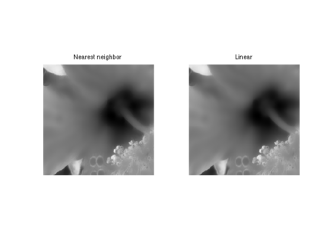
Exercice 5: (check the solution) Study the influence of \(\sigma_x\) on the filter, for a fixed \(\sigma_v=0.2\).
exo5;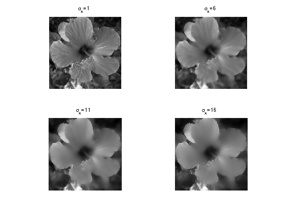
Exercice 6: (check the solution) Study the influence of \(\sigma_v\) on the filter, for a fixed \(\sigma_x=8\).
exo6;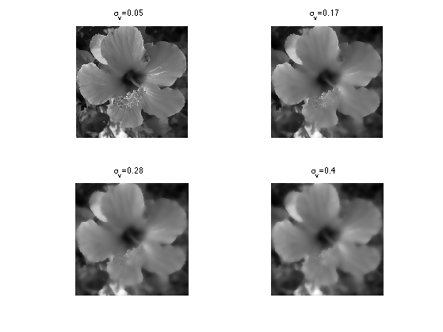
Note that this stack implementation of the bilateral filter can be quite inacurate, in particular if \(p\) is small. A more precise fast implementation is described in:
A Fast Approximation of the Bilateral Filter using a Signal Processing Approach, Sylvain Paris and Frédo Durand, International Journal of Computer Vision (IJCV'09)
Denoising using the Bilateral Filter
The first basic application of the bilateral filter is for denoising. It performs a filtering that respects edges.
Noise level.
mu = .05;
Create a noisy image \(f = f_0 + w\) where \(w\) is a Gaussian white noise of variance \(\mu^2\).
f = f0 + randn(n,n)*mu;
Display the noisy image.
clf; imageplot(clamp(f));
Perform denoising using the bilateral filter.
sx = 4; sv = .2; clf; imageplot( clamp(bilateral_lin(f,sx,sv)) );
Exercice 7: (check the solution) Compute the optimal parameter \((\sigma_x,\sigma_v)\) to maximize the SNR between \(f_0\) and the filtered image. Record the optimal denoising result in fOpt.
exo7;
Display optimal denoising.
clf; imageplot(clamp(fOpt), ['Bilateral, SNR=' num2str(snr(f0,fOpt),3) 'dB']);
Exercice 8: (check the solution) Compare with translation invariant wavelet thresholding.
exo8;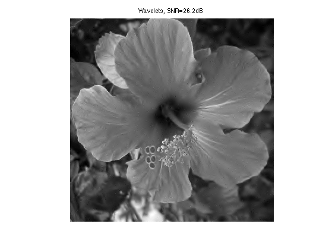
Detail Enhancement
The bilateral filters is able to remove fine scale details (noise, textures) and retain only the cartoon content of the image (shape edges).
Set up parameters \(\si_x,\si_v\).
sx = 4; sv = .2;
Performm the filtering to obtain the base layer \( f_1 = \Bb_{\si_x,\si_v}(f_0) \).
f1 = bilateral_lin(f0,sx,sv);
Compute the detail layer \( r = f_0 - f_1 \).
r = f0 - f1;
Display the base layer.
clf; imageplot(f1);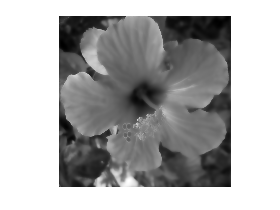
Display the residual.
clf; imageplot(r);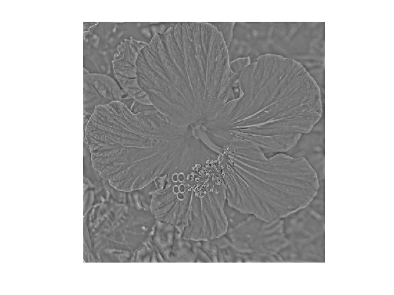
Exercice 9: (check the solution) Perform detail boosting by enhancing the detail layer. For instance use various non-linear remapping of the intensities such as \( f_1 + \ga r^\al \) for some values of \(\ga \geq 1\) and \(\al>0\).
exo9;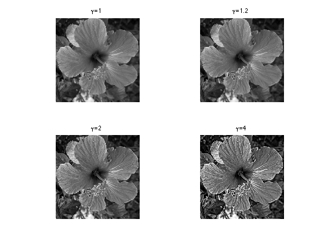
Exercice 10: (check the solution) Extend the bilateral filter for color images.
exo10;
High Dynamic Range Tone Mapping
Tone mapping corresponds to compressing the contrast of an image that contains a large dynamic range, in order to be viewable on a low dynamic range display.
Load a high dynamic range image.
addpath('toolbox_additional/'); name = 'memorial'; f = load_hdr([name '.hdr']); p = min(size(f,1),size(f,2)); f = rescale( f(1:p,1:p,:) ); f = rescale( clamp( image_resize(f,n,n) ) );
The pixel values can take very large value and leads to over exposition (saturation) if displayed with a limited range (clamping of the values).
clf; imageplot(min(f,1e-4));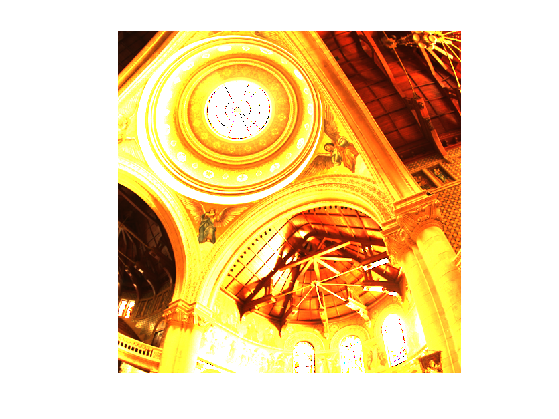
Selecting a higher threshold leads to less saturation but more region being under exposed (dark).
clf; imageplot(min(f,1e-3));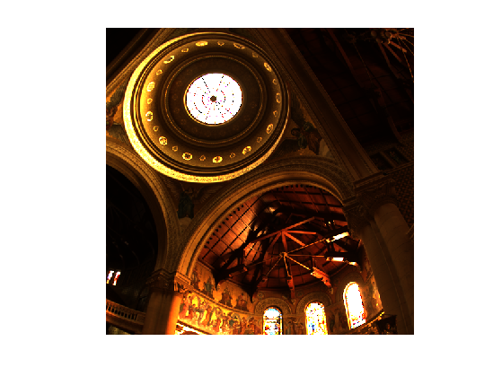
A simple way to process a color image is to perform a change of color space and to process only the intensity channel.
For instance one can use a HSV color space and process the intensity channel \(f_V\).
fhsv = rgb2hsv(f); fV = fhsv(:,:,3);
Shortcut the reconstruct the image using a modified V channel.
color_recompose = @(fV)hsv2rgb( cat(3, fhsv(:,:,1:2), rescale(fV) ) );
% color_recompose = @(fV1)f.*repmat(fV1./fV, [1 1 3]);
Global tone mapping corresponds to applying a fixed non-linear mapping \(\phi\) to all the pixel to compress the range by displaying \(\phi(f_V)\).
A polpular contrast modification is the \(\gamma\) correction, that uses \( \phi(t) = (t+\epsilon)^\al \) for a small \( \epsilon>0 \) and \(\al \in (0,1]\).
epsilon = 1e-5; alpha = 0.1; imageplot( color_recompose( (fV+epsilon).^alpha ) );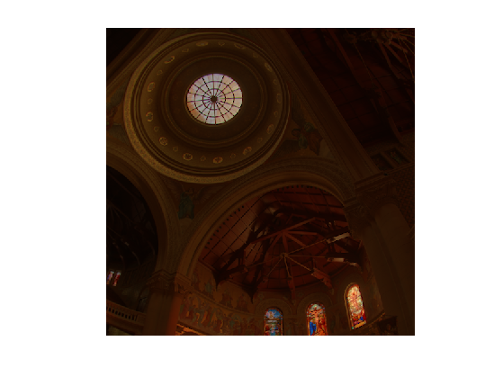
Exercice 11: (check the solution) Try several tone mapping operators, such as for instance \[ \phi_1(t)=\frac{t}{t+\epsilon} \qandq \phi_2(t) = \log(t+\epsilon) \]
exo11;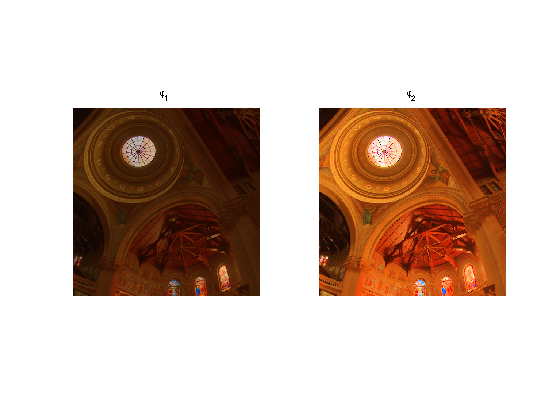
Global tone mapping tends to destroy fine scale details. A local tone mapping operator decompose the logarithm \[ F_V = \frac{ \log(f_V + \epsilon)-a }{ b-a } \] of \(f_V\) into a base cartoon layer and a textured layer, and only compress the base layer. Here \(a\) and \(b\) are compute to ensure that \(F_V \in [0,1]\).
Compute the rescaled logarithm layer \(F_V\).
epsilon = 1e-5; FV = log(fV+epsilon); a = min(FV(:)); b = max(FV(:)); FV = (FV-a)/(b-a);
The base layer is defined as \( B_V = \Bb_{\si_x,\si_v}(F_V) \).
sx = 5; sv = .02; FV1 = bilateral_lin(FV, sx,sv);
The tone mapped intensity image is defined as \[ \tilde f_V = e^{ ( \ga B_V + F_V - B_V )(b-a)+a } - \epsilon \] where \( \ga \in (0,1] \) is the compression factor. For \(\ga=1\), one has \(\tilde f_V = f_V\).
Display the filtered layer over the log domain.
clf; imageplot(FV1);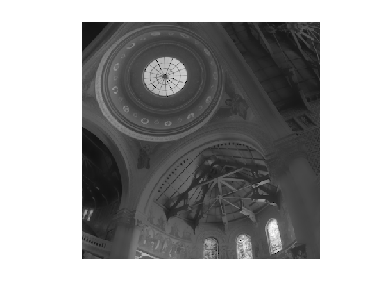
Display the residual over the log domain.
clf; imageplot(FV-FV1);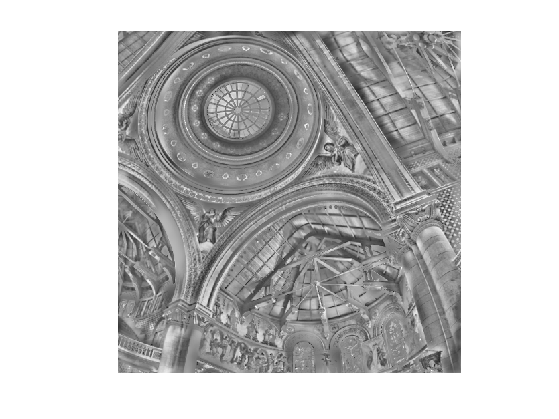
Exercice 12: (check the solution) Compute the tone mapped image using \(\tilde f_V\). Test with several value of \(\ga,\epsilon, \si_x,\si_v\).
exo12;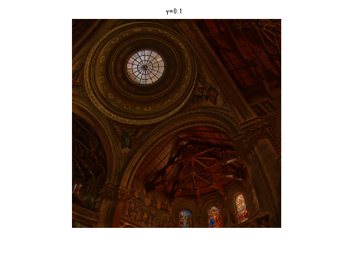